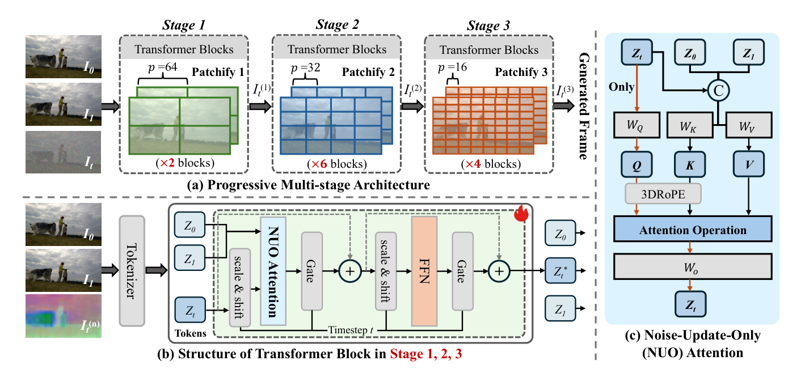
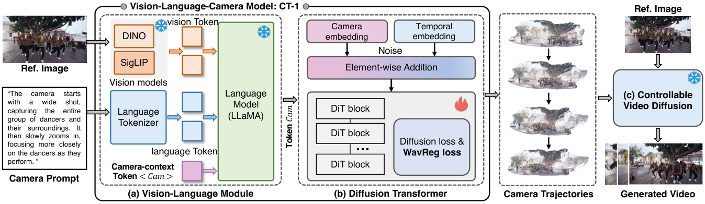
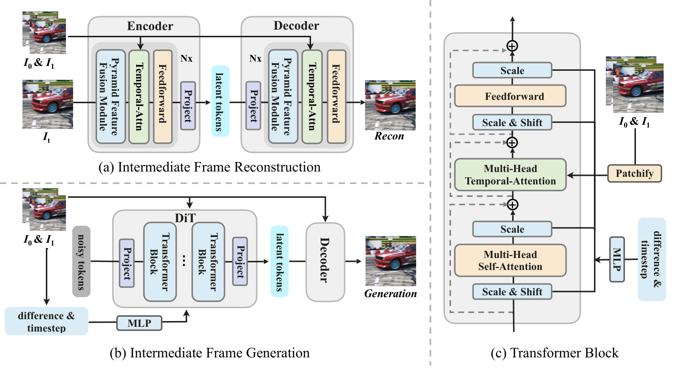
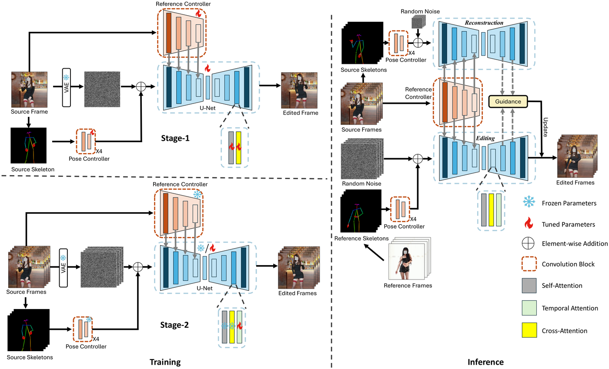
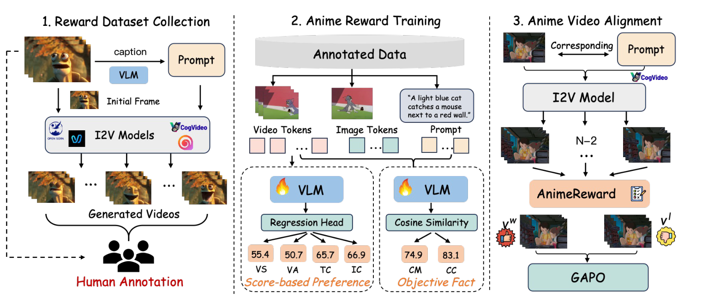
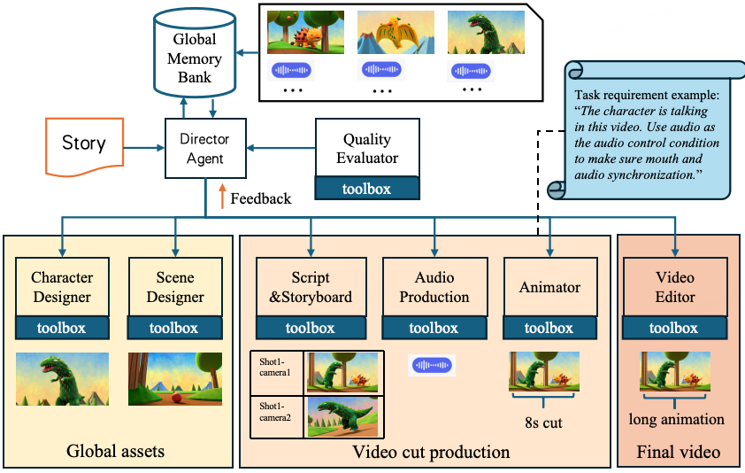
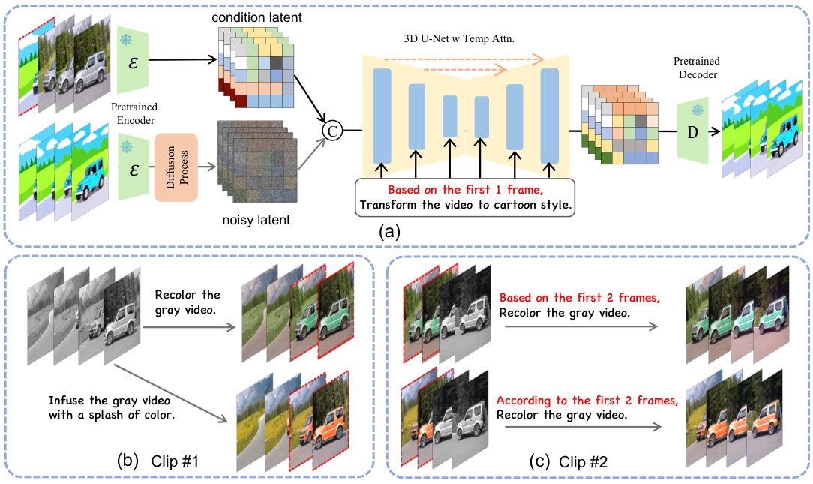

ACM MM 202601
SPEED: One-Step Pixel Diffusion for High-quality Video Frame Interpolation
ACM International Conference on Multimedia (ACM MM), 2026
I am a master's student in the School of Computer Science at Fudan University, advised by Prof. Zuxuan Wu. My research explores generative visual modeling for embodied intelligence, with the goal of building controllable and efficient visual foundations that help embodied agents understand and predict how scenes evolve over time. My first- and co-first-author work has been accepted to CVPR 2025 and ACM MM 2026, alongside publications at ICCV, SIGGRAPH Asia, and ICASSP.
My research lies at the intersection of embodied intelligence and generative visual modeling. I focus on generative world models, spatial and motion intelligence, and efficient visual generation. In particular, I study camera- and motion-conditioned video synthesis, multimodal spatial reasoning and camera planning, large-motion temporal prediction, and efficient diffusion models as visual foundations for embodied agents.

ACM MM 202601
ACM International Conference on Multimedia (ACM MM), 2026

ACM MM 202602
ACM International Conference on Multimedia (ACM MM), 2026

CVPR 202503
IEEE/CVF Conference on Computer Vision and Pattern Recognition (CVPR), 2025

ICCV 202504
IEEE/CVF International Conference on Computer Vision (ICCV), 2025

ICASSP 202605
IEEE International Conference on Acoustics, Speech and Signal Processing (ICASSP), 2026

SIGGRAPH Asia 202506
Proceedings of the SIGGRAPH Asia 2025 Posters, 2025

arXiv 202307
arXiv preprint arXiv:2311.18837, 2023
Research Intern · Shanghai, China
Virtual Human Group · One-step pixel diffusion for video frame interpolation (SPEED) and vision-language-driven camera-controllable video generation (CT-1).
Research Intern · Shanghai, China
Noah's Ark Lab · Large-motion video frame interpolation (EDEN) and lightweight video motion editing (MotionFollower).
Sep 2023 — Jun 2026
Master's degree · School of Computer Science
Advisor: Prof. Zuxuan WuSep 2018 — Jun 2022
Undergraduate study · School of Chemistry and Molecular Sciences